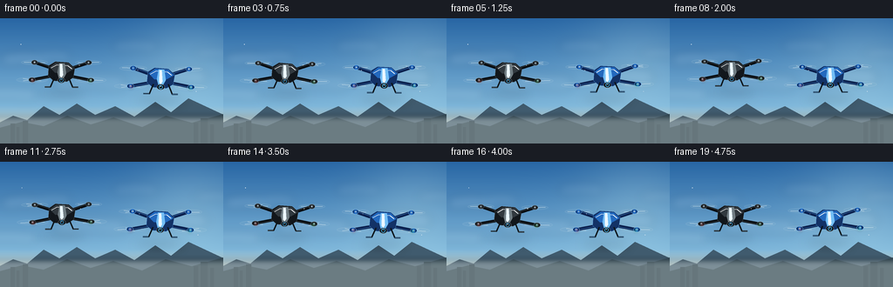
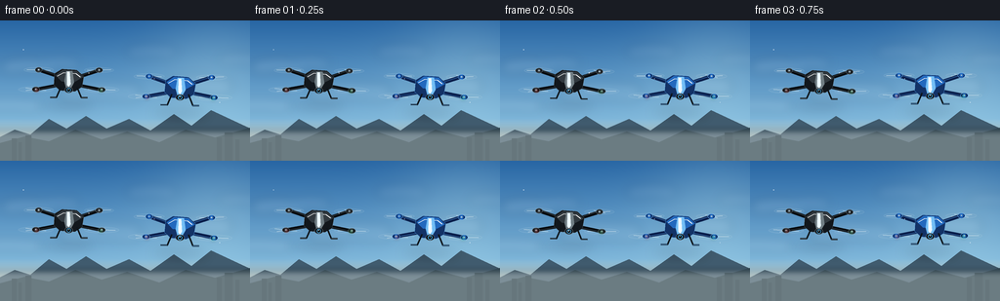

CODING AGENTS AS PIXEL WORLD MODELS
traex/GPT-5.6-Sol · instance_preservation_0043
点击播放 · 原生 RGB 像素
逐轮保存的候选
回放视频、检查图与代码变化。
每份候选均可单独播放。实际图片检查记录在下方工具轨迹中。
候选 01播放与检查图
点击播放 · 原生 RGB 像素


展开代码变化
--- 上一保存版本
+++ 本次保存版本
@@ -0,0 +1,191 @@
+from pathlib import Path
+import json, math, random
+import numpy as np
+from PIL import Image, ImageDraw, ImageFilter
+import artifact_io
+
+ROOT = Path(__file__).resolve().parent
+SPEC = json.loads((ROOT / 'task_spec.json').read_text())
+W, H, N = SPEC['width'], SPEC['height'], SPEC['frames']
+SS = 4
+w, h = W*SS, H*SS
+rng = random.Random(43)
+
+def pts(seq):
+ return [(int(x*SS), int(y*SS)) for x,y in seq]
+
+def ellipse(draw, box, fill, outline=None, width=1):
+ draw.ellipse(tuple(int(v*SS) for v in box), fill=fill, outline=outline, width=width*SS)
+
+def line(draw, xy, fill, width):
+ draw.line(pts(xy), fill=fill, width=max(1,int(width*SS)), joint='curve')
+
+def rounded(draw, box, r, fill, outline=None, width=1):
+ draw.rounded_rectangle(tuple(int(v*SS) for v in box), radius=int(r*SS), fill=fill, outline=outline, width=width*SS)
+
+def make_background(frame):
+ # A calm, bright atmospheric sky with very subtle camera drift.
+ yy = np.linspace(0, 1, h)[:,None,None]
+ top = np.array([40,102,164],dtype=float)[None,None,:]
+ mid = np.array([128,184,219],dtype=float)[None,None,:]
+ low = np.array([238,204,159],dtype=float)[None,None,:]
+ a = np.minimum(yy/0.72, 1)
+ arr = top*(1-a)+mid*a
+ b = np.maximum((yy-.70)/.30,0)
+ arr = arr*(1-b)+low*b
+ arr = np.tile(arr,(1,w,1))
+ # soft sun glow at upper right
+ X,Y=np.meshgrid(np.arange(w),np.arange(h))
+ sx,sy=220*SS,42*SS
+ glow=np.exp(-((X-sx)**2+(Y-sy)**2)/(2*(47*SS)**2))[...,None]
+ arr=np.clip(arr+glow*np.array([28,23,12]),0,255).astype(np.uint8)
+ im=Image.fromarray(arr,'RGB')
+
+ # fixed cloudscape, shifted imperceptibly to convey a hovering camera
+ cloud=Image.new('RGBA',(w,h),(0,0,0,0)); cd=ImageDraw.Draw(cloud,'RGBA')
+ drift=math.sin(frame*.18)*0.35*SS
+ cloud_specs=[
+ (28,48,26,8,24),(61,45,20,7,18),(155,33,25,7,15),(202,68,35,9,20),
+ (8,88,34,7,20),(103,75,40,10,17),(244,41,20,6,15)]
+ for cx,cy,rx,ry,alpha in cloud_specs:
+ cx=cx*SS+drift; cy*=SS; rx*=SS; ry*=SS
+ for j in range(7):
+ ox=(j-3)*rx*.24; oy=(abs(j-3)*.08-0.32)*ry
+ rr=rx*(.32+.05*(3-abs(j-3)))
+ cd.ellipse((cx+ox-rr,cy+oy-ry,cx+ox+rr,cy+oy+ry),fill=(248,251,253,alpha))
+ cloud=cloud.filter(ImageFilter.GaussianBlur(5*SS))
+ im=Image.alpha_composite(im.convert('RGBA'),cloud)
+
+ # distant ridges and city silhouettes anchor the hover altitude.
+ d=ImageDraw.Draw(im,'RGBA')
+ shift=math.sin(frame*.12)*.25
+ ridge=[(-5,122),(15,112),(31,117),(50,101),(68,111),(88,98),(109,111),(132,101),(154,113),(178,96),(196,108),(216,92),(263,114),(263,145),(-5,145)]
+ ridge=[((x+shift)*SS,y*SS) for x,y in ridge]
+ d.polygon(ridge,fill=(64,91,110,82))
+ ridge2=[(-5,127),(25,119),(50,124),(77,112),(104,122),(130,114),(163,125),(190,112),(220,120),(263,108),(263,145),(-5,145)]
+ d.polygon([(int((x-shift*.5)*SS),int(y*SS)) for x,y in ridge2],fill=(49,72,85,105))
+ # tiny distant buildings
+ for x0,bw,bh in [(12,5,9),(19,3,5),(26,6,12),(222,5,10),(230,8,15),(241,4,8)]:
+ d.rectangle((int(x0*SS),int((130-bh)*SS),int((x0+bw)*SS),h),fill=(41,63,76,105))
+ # haze veil
+ haze=Image.new('RGBA',(w,h),(0,0,0,0)); hd=ImageDraw.Draw(haze,'RGBA')
+ hd.rectangle((0,113*SS,w,h),fill=(209,215,210,48))
+ haze=haze.filter(ImageFilter.GaussianBlur(3*SS))
+ return Image.alpha_composite(im,haze)
+
+def local_transform(cx,cy,angle,scale):
+ co,si=math.cos(angle),math.sin(angle)
+ def tr(p):
+ x,y=p
+ return ((cx+(x*co-y*si)*scale)*SS,(cy+(x*si+y*co)*scale)*SS)
+ return tr
+
+def draw_glow(base, x,y,color, radius=5):
+ lay=Image.new('RGBA',(w,h),(0,0,0,0)); ld=ImageDraw.Draw(lay,'RGBA')
+ for r,a in [(radius,22),(radius*.55,55),(radius*.22,220)]:
+ ld.ellipse(((x-r)*SS,(y-r)*SS,(x+r)*SS,(y+r)*SS),fill=(*color,a))
+ lay=lay.filter(ImageFilter.GaussianBlur(1.4*SS))
+ base.alpha_composite(lay)
+
+def drone(base,cx,cy,scale,body_kind,frame,phase):
+ # Stable geometry; only a tiny physical hover roll changes across frames.
+ roll=math.radians(1.0*math.sin(frame*.48+phase))
+ tr=local_transform(cx,cy,roll,scale)
+ d=ImageDraw.Draw(base,'RGBA')
+ if body_kind=='black':
+ dark=(18,23,28,255); side=(8,12,16,255); top=(49,57,63,255); edge=(91,103,109,200)
+ accent=(112,125,131,255); lens=(70,157,207,255)
+ else:
+ dark=(19,50,102,255); side=(10,31,76,255); top=(35,105,190,255); edge=(89,165,237,220)
+ accent=(115,190,245,255); lens=(83,194,255,255)
+
+ # soft ambient shadow beneath each aircraft, emphasizing suspension in air
+ sh=Image.new('RGBA',(w,h),(0,0,0,0)); sd=ImageDraw.Draw(sh,'RGBA')
+ sd.ellipse(((cx-29*scale)*SS,(cy+25*scale)*SS,(cx+29*scale)*SS,(cy+31*scale)*SS),fill=(19,35,46,45))
+ sh=sh.filter(ImageFilter.GaussianBlur(6*SS)); base.alpha_composite(sh)
+ d=ImageDraw.Draw(base,'RGBA')
+
+ # Rotor coordinates: back pair slightly higher/smaller, front pair lower/larger.
+ rotors=[((-34,-12),.88),((34,-12),.88),((-37,10),1.03),((37,10),1.03)]
+ # translucent spinning rotor disks behind arms
+ rotor_layer=Image.new('RGBA',(w,h),(0,0,0,0)); rd=ImageDraw.Draw(rotor_layer,'RGBA')
+ for i,(p,depth) in enumerate(rotors):
+ x,y=tr(p); x/=SS; y/=SS
+ rx=19*scale*depth; ry=3.2*scale*depth
+ rd.ellipse(((x-rx)*SS,(y-ry)*SS,(x+rx)*SS,(y+ry)*SS),fill=(180,205,215,15),outline=(215,232,239,80),width=max(1,int(SS*.45)))
+ # Four crisp propeller blades, phase shifts rapidly frame to frame.
+ ang=frame*1.47 + i*1.05 + phase
+ for blade in (ang,ang+math.pi/2):
+ dx=math.cos(blade)*rx*.82; dy=math.sin(blade)*ry*.64
+ rd.line(((x-dx)*SS,(y-dy)*SS,(x+dx)*SS,(y+dy)*SS),fill=(226,238,241,125),width=max(1,int(1.05*SS)))
+ base.alpha_composite(rotor_layer)
+ d=ImageDraw.Draw(base,'RGBA')
+
+ # structural arms from body to four motors
+ arm_roots=[(-10,-4),(10,-4),(-11,5),(11,5)]
+ for i,((rp,_dep),root) in enumerate(zip(rotors,arm_roots)):
+ p0=tr(root); p1=tr(rp)
+ d.line((p0,p1),fill=side,width=max(2,int(4.0*scale*SS)))
+ # narrow edge highlight gives arms cylindrical volume
+ off=-.8*SS if i<2 else .6*SS
+ d.line(((p0[0],p0[1]+off),(p1[0],p1[1]+off)),fill=edge,width=max(1,int(.7*scale*SS)))
+
+ # motors and caps, back then front (same persistent details)
+ for i,(p,dep) in enumerate(rotors):
+ x,y=tr(p); rr=4.2*scale*(.92 if i<2 else 1.0)
+ d.ellipse((x-rr*SS,y-2.8*scale*SS,x+rr*SS,y+2.8*scale*SS),fill=side,outline=edge,width=max(1,int(.7*SS)))
+ d.ellipse((x-2.2*scale*SS,y-2.2*scale*SS,x+2.2*scale*SS,y+2.2*scale*SS),fill=top)
+ d.ellipse((x-.75*scale*SS,y-.9*scale*SS,x+.75*scale*SS,y+.6*scale*SS),fill=(190,204,210,180))
+
+ # Main fuselage: faceted upper shell and darker lower belly.
+ shell=[(-16,-8),(-8,-13),(9,-12),(17,-5),(15,7),(7,12),(-10,11),(-17,5)]
+ d.polygon([tr(p) for p in shell],fill=dark,outline=edge)
+ topface=[(-15,-6),(-7,-12),(9,-11),(16,-4),(7,1),(-8,1)]
+ d.polygon([tr(p) for p in topface],fill=top)
+ d.line([tr(p) for p in [(-13,-5),(-6,-9),(8,-8),(13,-4)]],fill=(255,255,255,65),width=max(1,int(.8*SS)))
+ # center stripe differs naturally by material but stays present throughout
+ d.polygon([tr(p) for p in [(-3,-11),(4,-11),(6,2),(2,9),(-3,8),(-5,1)]],fill=accent)
+ d.polygon([tr(p) for p in [(-2,-10),(1,-10),(2,4),(0,7),(-2,5)]],fill=(235,247,255,58))
+
+ # front gimbal camera, facing viewer
+ gc=tr((0,10.5)); gx,gy=gc
+ rr=4.7*scale*SS
+ d.ellipse((gx-rr,gy-rr*.72,gx+rr,gy+rr*.72),fill=(10,14,18,255),outline=(103,114,122,240),width=max(1,int(.7*SS)))
+ lr=2.45*scale*SS
+ d.ellipse((gx-lr,gy-lr,gx+lr,gy+lr),fill=(4,9,13,255),outline=lens,width=max(1,int(.8*SS)))
+ d.ellipse((gx-.7*scale*SS,gy-1.2*scale*SS,gx+.25*scale*SS,gy-.25*scale*SS),fill=(210,241,255,190))
+
+ # landing legs, symmetric and always visible
+ for sgn in (-1,1):
+ a=tr((sgn*9,7)); b=tr((sgn*14,19)); c=tr((sgn*21,19))
+ d.line((a,b,c),fill=(13,20,25,245),width=max(2,int(1.8*scale*SS)),joint='curve')
+ d.line((b,c),fill=edge,width=max(1,int(.55*SS)))
+
+ # navigation lights: red on left and green on right, tiny steady identifiers
+ lp=tr((-36,11)); rp=tr((36,11))
+ draw_glow(base,lp[0]/SS,lp[1]/SS,(255,55,46),3.2*scale)
+ draw_glow(base,rp[0]/SS,rp[1]/SS,(65,255,139),3.2*scale)
+
+def render(i):
+ im=make_background(i)
+ # Their positions never swap; distinct bobbing phases convey two independent hovering objects.
+ left_y=61.5 + 1.6*math.sin(i*.46+.2)
+ right_y=68.0 + 1.35*math.sin(i*.43+2.05)
+ left_x=70.5 + .6*math.sin(i*.22)
+ right_x=184.0 + .55*math.sin(i*.19+1.3)
+ drone(im,left_x,left_y,.91,'black',i,.25)
+ drone(im,right_x,right_y,.94,'blue',i,1.8)
+
+ # subtle foreground atmospheric specks, consistent and unobtrusive
+ d=ImageDraw.Draw(im,'RGBA')
+ for k in range(4):
+ x=(31+k*67 + i*(.10+k*.025))%270-7
+ y=30+k*18 + math.sin(k*2.1)*7
+ d.ellipse(((x-.35)*SS,(y-.35)*SS,(x+.35)*SS,(y+.35)*SS),fill=(255,255,255,70))
+ im=im.convert('RGB').resize((W,H),Image.Resampling.LANCZOS)
+ # mild filmic contrast / saturation is already encoded in scene colors
+ return np.asarray(im,dtype=np.uint8)
+
+frames=np.stack([render(i) for i in range(N)],axis=0)
+artifact_io.save(frames, ROOT)
+print(f'saved {frames.shape} {frames.dtype}; range={frames.min()}..{frames.max()}')
可观测工具轨迹
实际执行的命令与返回图片。
命令 1exit 0
/bin/bash -lc "cat prompt.txt && printf '\\n---RULES---\\n' && cat GENERATION_RULES.md && printf '\\n---SPEC---\\n' && cat task_spec.json"
命令 2exit 0
/bin/bash -lc "find . -maxdepth 2 -type f -printf '%p\\n' | sort"
命令 3exit 0
/bin/bash -lc 'cat artifact_io.py'
命令 4exit 0
/bin/bash -lc "cat > generate.py <<'PY'
from pathlib import Path
import json, math, random
import numpy as np
from PIL import Image, ImageDraw, ImageFilter
import artifact_io
ROOT = Path(__file__).resolve().parent
SPEC = json.loads((ROOT / 'task_spec.json').read_text())
W, H, N = SPEC['width'], SPEC['height'], SPEC['frames']
SS = 4
w, h = W*SS, H*SS
rng = random.Random(43)
def pts(seq):
return [(int(x*SS), int(y*SS)) for x,y in seq]
def ellipse(draw, box, fill, outline=None, width=1):
draw.ellipse(tuple(int(v*SS) for v in box), fill=fill, outline=outline, width=width*SS)
def line(draw, xy, fill, width):
draw.line(pts(xy), fill=fill, width=max(1,int(width*SS)), joint='curve')
def rounded(draw, box, r, fill, outline=None, width=1):
draw.rounded_rectangle(tuple(int(v*SS) for v in box), radius=int(r*SS), fill=fill, outline=outline, width=width*SS)
def make_background(frame):
# A calm, bright atmospheric sky with very subtle camera drift.
yy = np.linspace(0, 1, h)[:,None,None]
top = np.array([40,102,164],dtype=float)[None,None,:]
mid = np.array([128,184,219],dtype=float)[None,None,:]
low = np.array([238,204,159],dtype=float)[None,None,:]
a = np.minimum(yy/0.72, 1)
arr = top*(1-a)+mid*a
b = np.maximum((yy-.70)/.30,0)
arr = arr*(1-b)+low*b
arr = np.tile(arr,(1,w,1))
# soft sun glow at upper right
X,Y=np.meshgrid(np.arange(w),np.arange(h))
sx,sy=220*SS,42*SS
glow=np.exp(-((X-sx)**2+(Y-sy)**2)/(2*(47*SS)**2))[...,None]
arr=np.clip(arr+glow*np.array([28,23,12]),0,255).astype(np.uint8)
im=Image.fromarray(arr,'RGB')
# fixed cloudscape, shifted imperceptibly to convey a hovering camera
cloud=Image.new('RGBA',(w,h),(0,0,0,0)); cd=ImageDraw.Draw(cloud,'RGBA')
drift=math.sin(frame*.18)*0.35*SS
cloud_specs=[
(28,48,26,8,24),(61,45,20,7,18),(155,33,25,7,15),(202,68,35,9,20),
(8,88,34,7,20),(103,75,40,10,17),(244,41,20,6,15)]
for cx,cy,rx,ry,alpha in cloud_specs:
cx=cx*SS+drift; cy*=SS; rx*=SS; ry*=SS
for j in range(7):
ox=(j-3)*rx*.24; oy=(abs(j-3)*.08-0.32)*ry
rr=rx*(.32+.05*(3-abs(j-3)))
cd.ellipse((cx+ox-rr,cy+oy-ry,cx+ox+rr,cy+oy+ry),fill=(248,251,253,alpha))
cloud=cloud.filter(ImageFilter.GaussianBlur(5*SS))
im=Image.alpha_composite(im.convert('RGBA'),cloud)
# distant ridges and city silhouettes anchor the hover altitude.
d=ImageDraw.Draw(im,'RGBA')
shift=math.sin(frame*.12)*.25
ridge=[(-5,122),(15,112),(31,117),(50,101),(68,111),(88,98),(109,111),(132,101),(154,113),(178,96),(196,108),(216,92),(263,114),(263,145),(-5,145)]
ridge=[((x+shift)*SS,y*SS) for x,y in ridge]
d.polygon(ridge,fill=(64,91,110,82))
ridge2=[(-5,127),(25,119),(50,124),(77,112),(104,122),(130,114),(163,125),(190,112),(220,120),(263,108),(263,145),(-5,145)]
d.polygon([(int((x-shift*.5)*SS),int(y*SS)) for x,y in ridge2],fill=(49,72,85,105))
# tiny distant buildings
for x0,bw,bh in [(12,5,9),(19,3,5),(26,6,12),(222,5,10),(230,8,15),(241,4,8)]:
d.rectangle((int(x0*SS),int((130-bh)*SS),int((x0+bw)*SS),h),fill=(41,63,76,105))
# haze veil
haze=Image.new('RGBA',(w,h),(0,0,0,0)); hd=ImageDraw.Draw(haze,'RGBA')
hd.rectangle((0,113*SS,w,h),fill=(209,215,210,48))
haze=haze.filter(ImageFilter.GaussianBlur(3*SS))
return Image.alpha_composite(im,haze)
def local_transform(cx,cy,angle,scale):
co,si=math.cos(angle),math.sin(angle)
def tr(p):
x,y=p
return ((cx+(x*co-y*si)*scale)*SS,(cy+(x*si+y*co)*scale)*SS)
return tr
def draw_glow(base, x,y,color, radius=5):
lay=Image.new('RGBA',(w,h),(0,0,0,0)); ld=ImageDraw.Draw(lay,'RGBA')
for r,a in [(radius,22),(radius*.55,55),(radius*.22,220)]:
ld.ellipse(((x-r)*SS,(y-r)*SS,(x+r)*SS,(y+r)*SS),fill=(*color,a))
lay=lay.filter(ImageFilter.GaussianBlur(1.4*SS))
base.alpha_composite(lay)
def drone(base,cx,cy,scale,body_kind,frame,phase):
# Stable geometry; only a tiny physical hover roll changes across frames.
roll=math.radians(1.0*math.sin(frame*.48+phase))
tr=local_transform(cx,cy,roll,scale)
d=ImageDraw.Draw(base,'RGBA')
if body_kind=='black':
dark=(18,23,28,255); side=(8,12,16,255); top=(49,57,63,255); edge=(91,103,109,200)
accent=(112,125,131,255); lens=(70,157,207,255)
else:
dark=(19,50,102,255); side=(10,31,76,255); top=(35,105,190,255); edge=(89,165,237,220)
accent=(115,190,245,255); lens=(83,194,255,255)
# soft ambient shadow beneath each aircraft, emphasizing suspension in air
sh=Image.new('RGBA',(w,h),(0,0,0,0)); sd=ImageDraw.Draw(sh,'RGBA')
sd.ellipse(((cx-29*scale)*SS,(cy+25*scale)*SS,(cx+29*scale)*SS,(cy+31*scale)*SS),fill=(19,35,46,45))
sh=sh.filter(ImageFilter.GaussianBlur(6*SS)); base.alpha_composite(sh)
d=ImageDraw.Draw(base,'RGBA')
# Rotor coordinates: back pair slightly higher/smaller, front pair lower/larger.
rotors=[((-34,-12),.88),((34,-12),.88),((-37,10),1.03),((37,10),1.03)]
# translucent spinning rotor disks behind arms
rotor_layer=Image.new('RGBA',(w,h),(0,0,0,0)); rd=ImageDraw.Draw(rotor_layer,'RGBA')
for i,(p,depth) in enumerate(rotors):
x,y=tr(p); x/=SS; y/=SS
rx=19*scale*depth; ry=3.2*scale*depth
rd.ellipse(((x-rx)*SS,(y-ry)*SS,(x+rx)*SS,(y+ry)*SS),fill=(180,205,215,15),outline=(215,232,239,80),width=max(1,int(SS*.45)))
# Four crisp propeller blades, phase shifts rapidly frame to frame.
ang=frame*1.47 + i*1.05 + phase
for blade in (ang,ang+math.pi/2):
dx=math.cos(blade)*rx*.82; dy=math.sin(blade)*ry*.64
rd.line(((x-dx)*SS,(y-dy)*SS,(x+dx)*SS,(y+dy)*SS),fill=(226,238,241,125),width=max(1,int(1.05*SS)))
base.alpha_composite(rotor_layer)
d=ImageDraw.Draw(base,'RGBA')
# structural arms from body to four motors
arm_roots=[(-10,-4),(10,-4),(-11,5),(11,5)]
for i,((rp,_dep),root) in enumerate(zip(rotors,arm_roots)):
p0=tr(root); p1=tr(rp)
d.line((p0,p1),fill=side,width=max(2,int(4.0*scale*SS)))
# narrow edge highlight gives arms cylindrical volume
off=-.8*SS if i<2 else .6*SS
d.line(((p0[0],p0[1]+off),(p1[0],p1[1]+off)),fill=edge,width=max(1,int(.7*scale*SS)))
# motors and caps, back then front (same persistent details)
for i,(p,dep) in enumerate(rotors):
x,y=tr(p); rr=4.2*scale*(.92 if i<2 else 1.0)
d.ellipse((x-rr*SS,y-2.8*scale*SS,x+rr*SS,y+2.8*scale*SS),fill=side,outline=edge,width=max(1,int(.7*SS)))
d.ellipse((x-2.2*scale*SS,y-2.2*scale*SS,x+2.2*scale*SS,y+2.2*scale*SS),fill=top)
d.ellipse((x-.75*scale*SS,y-.9*scale*SS,x+.75*scale*SS,y+.6*scale*SS),fill=(190,204,210,180))
# Main fuselage: faceted upper shell and darker lower belly.
shell=[(-16,-8),(-8,-13),(9,-12),(17,-5),(15,7),(7,12),(-10,11),(-17,5)]
d.polygon([tr(p) for p in shell],fill=dark,outline=edge)
topface=[(-15,-6),(-7,-12),(9,-11),(16,-4),(7,1),(-8,1)]
d.polygon([tr(p) for p in topface],fill=top)
d.line([tr(p) for p in [(-13,-5),(-6,-9),(8,-8),(13,-4)]],fill=(255,255,255,65),width=max(1,int(.8*SS)))
# center stripe differs naturally by material but stays present throughout
d.polygon([tr(p) for p in [(-3,-11),(4,-11),(6,2),(2,9),(-3,8),(-5,1)]],fill=accent)
d.polygon([tr(p) for p in [(-2,-10),(1,-10),(2,4),(0,7),(-2,5)]],fill=(235,247,255,58))
# front gimbal camera, facing viewer
gc=tr((0,10.5)); gx,gy=gc
rr=4.7*scale*SS
d.ellipse((gx-rr,gy-rr*.72,gx+rr,gy+rr*.72),fill=(10,14,18,255),outline=(103,114,122,240),width=max(1,int(.7*SS)))
lr=2.45*scale*SS
d.ellipse((gx-lr,gy-lr,gx+lr,gy+lr),fill=(4,9,13,255),outline=lens,width=max(1,int(.8*SS)))
d.ellipse((gx-.7*scale*SS,gy-1.2*scale*SS,gx+.25*scale*SS,gy-.25*scale*SS),fill=(210,241,255,190))
# landing legs, symmetric and always visible
for sgn in (-1,1):
a=tr((sgn*9,7)); b=tr((sgn*14,19)); c=tr((sgn*21,19))
d.line((a,b,c),fill=(13,20,25,245),width=max(2,int(1.8*scale*SS)),joint='curve')
d.line((b,c),fill=edge,width=max(1,int(.55*SS)))
# navigation lights: red on left and green on right, tiny steady identifiers
lp=tr((-36,11)); rp=tr((36,11))
draw_glow(base,lp[0]/SS,lp[1]/SS,(255,55,46),3.2*scale)
draw_glow(base,rp[0]/SS,rp[1]/SS,(65,255,139),3.2*scale)
def render(i):
im=make_background(i)
# Their positions never swap; distinct bobbing phases convey two independent hovering objects.
left_y=61.5 + 1.6*math.sin(i*.46+.2)
right_y=68.0 + 1.35*math.sin(i*.43+2.05)
left_x=70.5 + .6*math.sin(i*.22)
right_x=184.0 + .55*math.sin(i*.19+1.3)
drone(im,left_x,left_y,.91,'black',i,.25)
drone(im,right_x,right_y,.94,'blue',i,1.8)
# subtle foreground atmospheric specks, consistent and unobtrusive
d=ImageDraw.Draw(im,'RGBA')
for k in range(4):
x=(31+k*67 + i*(.10+k*.025))%270-7
y=30+k*18 + math.sin(k*2.1)*7
d.ellipse(((x-.35)*SS,(y-.35)*SS,(x+.35)*SS,(y+.35)*SS),fill=(255,255,255,70))
im=im.convert('RGB').resize((W,H),Image.Resampling.LANCZOS)
# mild filmic contrast / saturation is already encoded in scene colors
return np.asarray(im,dtype=np.uint8)
frames=np.stack([render(i) for i in range(N)],axis=0)
artifact_io.save(frames, ROOT)
print(f'saved {frames.shape} {frames.dtype}; range={frames.min()}..{frames.max()}')
PY
python generate.py
ls -lh pixels.npz index.html inspection.png frames/00.png frames/19.png"保存候选 1 份；完成命令 4 次；可验证图片返回 0 张。原始 API 响应与完整日志保留在本地。